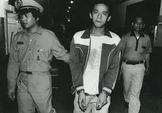

一段悲劇背後的社會縮影
湯英伸曾就讀嘉義師專，後因故休學。1986年初，為負擔家計， 從阿里山鄉特富野前往臺北市謀職，展開離鄉打拼的生活。
圖1：當時工作的洗衣店
初到台北的湯英伸，原先在西餐廳工作，後被介紹到洗衣店。 然而老闆將薪資從500元降至200元，並要求每天工作長達17小時， 同時扣留他的身分證，使他無法自由離開。
第八天，他鼓起勇氣辭職並要求歸還證件，卻遭拒絕。 第九天凌晨，又被強迫工作，長期壓力與剝削讓他情緒崩潰， 最終爆發衝突，導致悲劇發生。

圖2：事件後遭警方逮捕
事件發生後，湯英伸被判處死刑並執行，引起社會廣泛關注。 許多人開始反思，此悲劇背後是否反映出對原住民的歧視與制度性不公。
此事件不僅是一宗刑事案件，更成為台灣社會檢視弱勢處境、 勞動剝削與族群議題的重要轉折點。